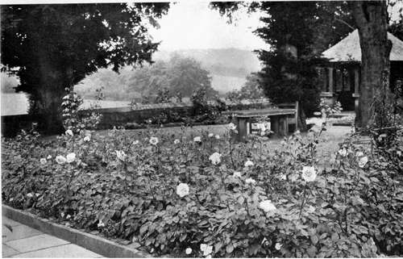

Rose Gardens. Part 3
Description
This section is from the book "What England Can Teach Us About Gardening", by Wilhelm Miller. Also available from Amazon: What England Can Teach Us About Gardening.
Rose Gardens. Part 3
With these as a foundation we can build two American types or races of roses. We shall have bedding roses in every colour, that will bloom from June to frost, thus giving us the longest season of bloom for the money. The first of these is Baby Rambler. We shall have climbing roses in every colour, that will sacrifice individual size of blossom to such an extraordinary mass display as the large roses can never hope to give. The first of these is Crimson Rambler. So I would urge every amateur who wishes to prove his devotion to the rose to raise new varieties by hybridizing in order to hasten the day when American roadsides, shrubberies, and gardens will be abloom with roses. For every one who has a yard and the love of roses in his heart can help. It takes three years for seedlings to develop their true character, but what of that? Three years pass quickly if one has a garden, and after that there is something new every year. And there are no mysteries about it. The elements of the problem have been outlined above. Bailey's "Principles of Plant Breeding" will put you on the track for everything else. Our prairie rose (R. setigera) will also help us in this great work of creating an American type of climbing rose and an American type of bedding rose.
LET US GIVE UP PRETENTIOUS ROSERIES WITH THEIR BRIEF PERIOD OF POMPOUS DISPLAY. WE NEED GARDENS THAT ARE FULL OF POETRY, ROMANCE, INSPIRATION, LIKE THIS ONE OF MR. ROBINSONS, OR LIKE MR. AARON WARD'S AT ROSLYN, LONG ISLAND. See Page 103.
A DECORATIVE WAY OF GROWING GREENHOUSE CLIMBERS WITHOUT SHADING TOO MUCH THE FLOWERS BENEATH THEM. THE EFFECT COULD BE MADE EVEN MORE PICTORIAL. See page no.
But there is a longer and even more important task before American hybridizers, for the culture of large double roses is in a most unsatisfactory condition. It always will be while they have to be grafted or budded on a foreign stock, for the stock is always stronger growing and sends up suckers that kill the choice varieties. Of course, the skilled amateur can always prevent this by watching daily for suckers and removing them before damage is done, but the beginner does not know about this, and we want roses for the million. The ultimate ideal is to have every rose grown on its own roots, in order to do away with the sucker nuisance. And hybridizers must make thousands of combinations between rugosa hybrids and the tea hybrids, because the rugosa makes the best bush, has the prettiest foliage, and is the most resistant to insects and diseases, while the tea rose is the only species that blooms all summer. There are only two traits that we want from the perpetuals or European roses — the deep colours and richer perfume. Everything else the European roses have to give us we must get rid of — their ugly habit, inability to withstand insects and diseases, cabbage-like flowers, and short season of bloom. It is a glorious game for American amateurs. It may need two centuries of work to get big, double, ever-blooming roses in all forms, colours, and odours, but it may be only twenty years until we have hybrid teas in all colours that will be hardy enough for all but the northern tier of states.
What can we do while waiting? Buy the costliest plants, in preference to the greenhouse-grown-and-sent-by-mail plants. The leading American rosarians will grow only imported roses that have been budded in the open. We can get our varieties "worked low" on the Manetti stock (which is an almost unmitigated curse in England, but not so bad here) and then give the varieties a chance to become independent of the stock. To accomplish this, set the plants two or three inches lower than they were in the nursery, so that roots may come from the stem above the union. Also scrape a little off the lower part of the stem to facilitate the escape of roots above the union. Arsenate of lead will positively save a great many flowers from the rose bug if you keep the foliage covered with it practically all the time the bug works. True, this is unsightly, but there is an equivalent preparation that is inconspicuous. On sandy soil the bug can be controlled only by using this treatment and buying varieties that are worked upon the brier. Other improvements in the ceaseless warfare we must get from books, magazines, experience, and visits to other rose gardens.
And, finally, we can all cherish in our hearts the ideal rose garden. The most perfect garden I have seen is that of Mr. Aaron Ward at Roslyn, L. I. There are about five hundred varieties in it, but it is not a mere collection of varieties. We can never have the best effects by growing only one bush of a kind. It is impossible to get a beautiful photograph of a rosery because of its countless stakes and labels. Mr. Ward has no stakes or labels, but it is easy to find the name of any variety, for a little beyond each bed is a chart of the bed, typewritten, under glass and raised to a convenient height. The whole device is easily removed, so that guests may roam about the garden without anything of a prosaic nature to drag one down to the earth. The whole atmosphere of the garden is one of romance and beauty. The roses are surrounded by other hardy flowers, and the garden is secluded.
I do not deny that the rosery gives a bigger show during June and July, and I am not urging every one to give up growing roses for quality blooms. England can teach us everything about quality roses, just as we can teach her everything about greenhouse roses. Indeed, Mr. Barron complains that Americans are afraid to prune their roses enough to get the best individual flowers. The only point I am urging is that we ought to give this new scheme of rose culture a trial because we need gardens that are full of poetry, romance, inspiration. (See plate 45.) And we cannot have such gardens without the best roses grown in the noblest ways.
If the student desires more practical help than this chapter can give let him read Mr. Robinson's chapter on roses in the "English Flower Garden" and study Mr. Ward's methods in "Roses and How to Grow Them," a volume in the "Garden Library." Also he will find an invaluable article called "Hardy Roses from May to November," by Mr. Leonard Barron, in Country Life in America for March, 1908, pages 491 to 494.
Continue to:
Tags
garden, flowers, plants, England, effects, foliage, gardening